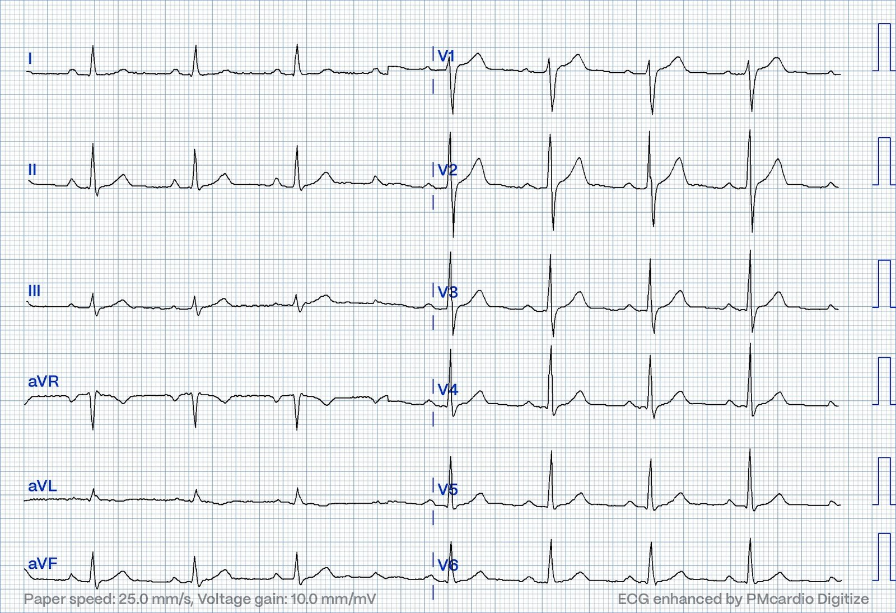
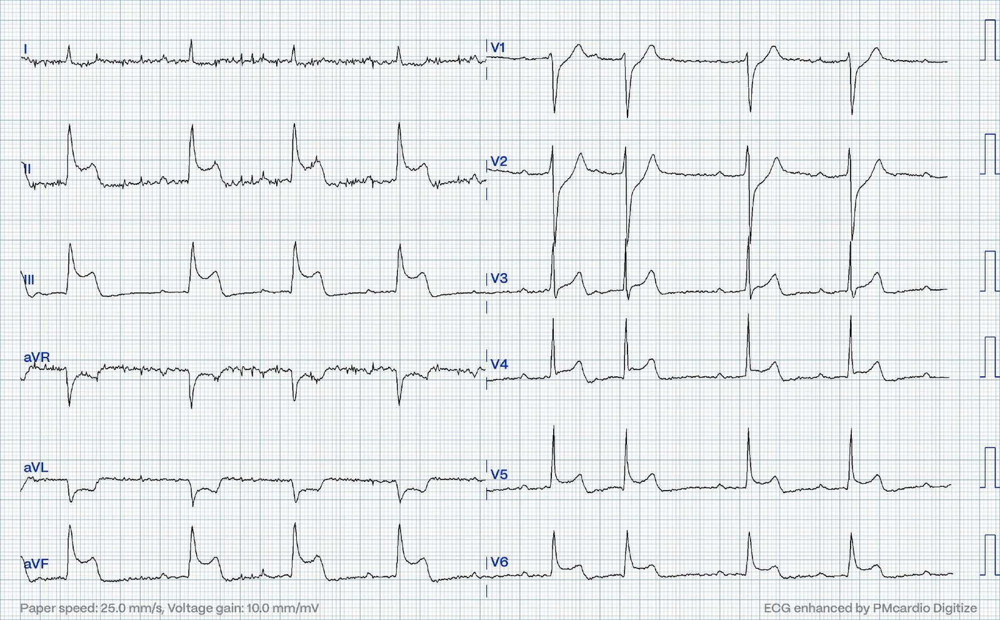
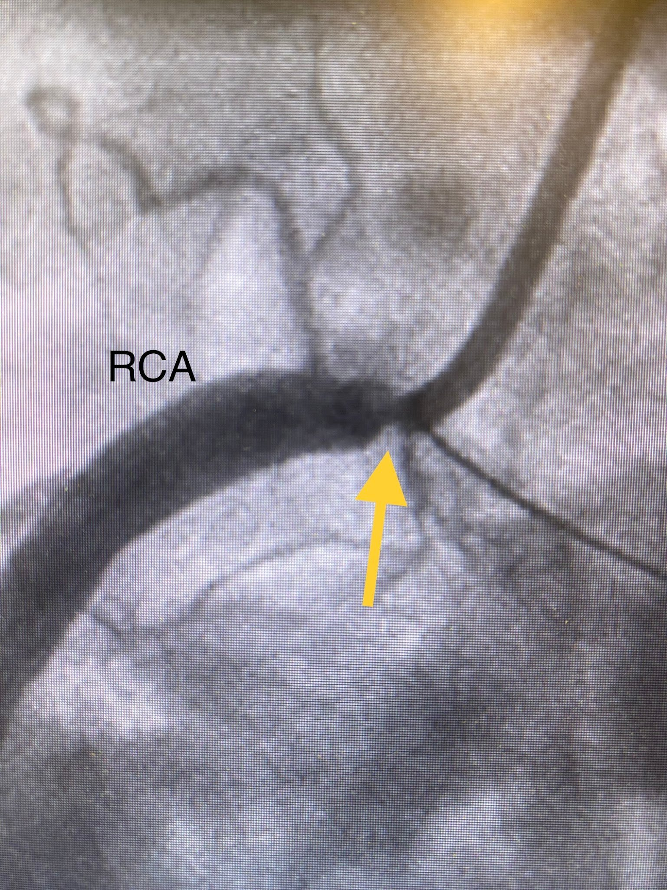
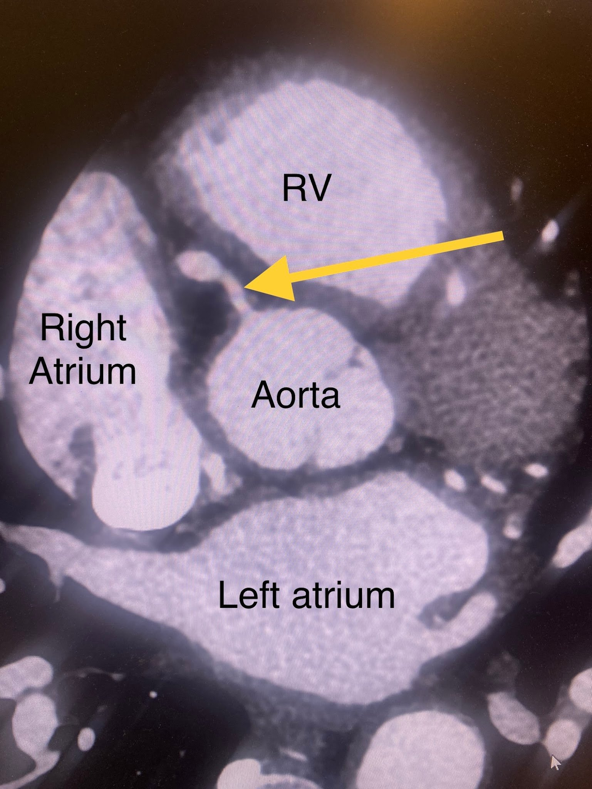
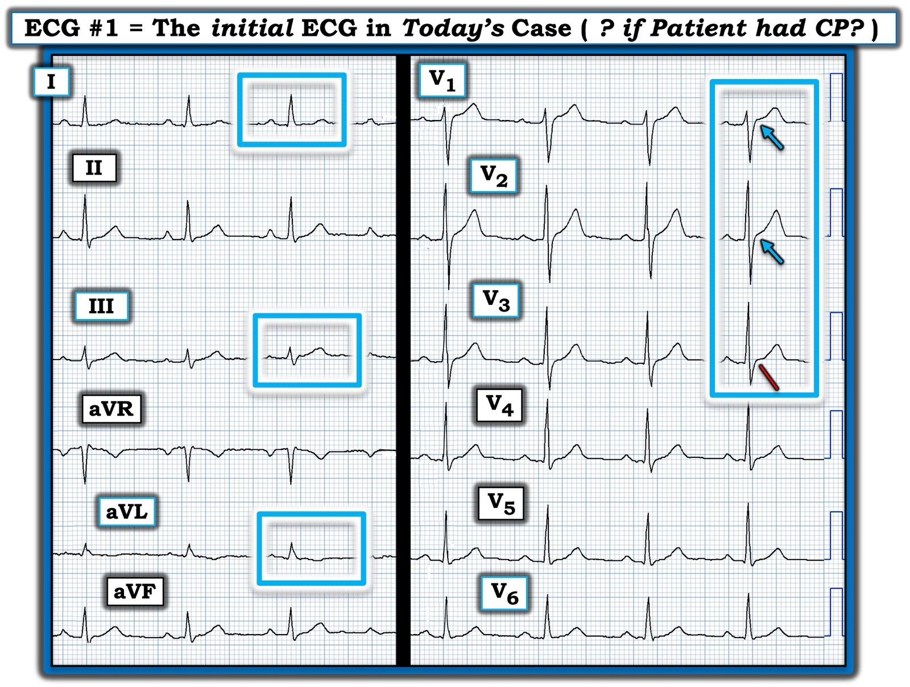
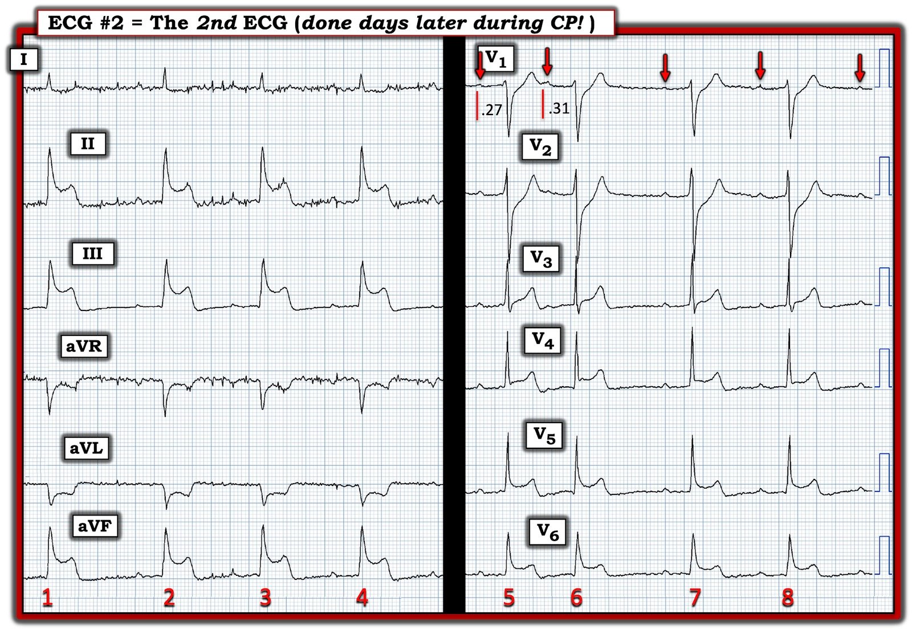

05/06/2024 — Chụp mạch vành bình thường một tuần trước. Vậy chắc chắn là viêm cơ tim?
Bản dịch tiếng Việt của bài "Normal angiogram one week prior. Must be myocarditis then?" – Dr. Smith’s ECG Blog. Giữ nguyên toàn bộ 7 hình ảnh của bản gốc.
Tác giả: Magnus Nossen
Bệnh nhân trong ca hôm nay là nam, 50 tuổi. Tiền sử đáng chú ý gồm tăng huyết áp, rối loạn lipid máu và rối loạn sử dụng thuốc lá trước đây. Bệnh nhân đến khám vì đau ngực điển hình, đau sau xương ức, lan lên tay trái và cổ. Bệnh nhân phủ nhận đau ngực khi gắng sức.
Điện tâm đồ dưới đây được ghi. Không rõ lúc này bệnh nhân có còn đau hay không.


Điện tâm đồ không có dấu hiệu thiếu máu cục bộ rõ ràng nào. Thực tế, điện tâm đồ được mô tả là bình thường, và nếu không có các điện tâm đồ liên tiếp hay điện tâm đồ cũ để so sánh thì có thể đúng là bình thường. Troponin I độ nhạy cao ban đầu là 6 ng/L (bình thường <34 ng/L), troponin lặp lại sau 3 giờ là 13, sau đó đạt đỉnh 15 vào ngày hôm sau.
Do tính chất của triệu chứng (dù không có giá trị troponin nào vượt bách phân vị thứ 99 của giới hạn trên tham chiếu (URL)), bệnh nhân được nghi ngờ đau thắt ngực không ổn định và được chuyển chụp mạch vành vào ngày hôm sau. Chụp mạch vành không thấy bệnh động mạch vành tắc nghẽn. Bác sĩ can thiệp (IC) kết luận rằng “phải tìm một nguyên nhân khác cho than phiền của bệnh nhân.”
Smith: không có siêu âm trong lòng mạch hay chụp cắt lớp quang học (optical coherence tomography), cả hai đều có thể dùng để tìm mảng xơ vữa nứt vỡ không biểu hiện thành hẹp trên phim chụp mạch vành. Cũng không làm nghiệm pháp kích thích để tìm co thắt mạch vành. Tôi nghĩ không kỹ thuật nào trong số này thường được làm ở những ca troponin không tăng, vì xác suất ACS thấp.
Bệnh nhân được xuất viện nhưng lại đến khám vì đau ngực trong vòng một tuần. Điện tâm đồ dưới đây được ghi trong lúc đau ngực. Bạn nghĩ gì?


Điện tâm đồ trên cho thấy thay đổi ST đáng kể rõ ràng. Bạn sẽ xử trí bệnh nhân này thế nào? Bạn có nghĩ bệnh nhân cần kích hoạt phòng thông tim thêm một lần nữa không? Bạn sẽ nói gì nếu bác sĩ can thiệp từ chối với lý do lần chụp mạch vành (CAG) gần đây, một tuần trước, là bình thường? Nếu bác sĩ can thiệp cho rằng đây là viêm cơ tim, bạn có chấp nhận đó là một giải thích hợp lý không?
Điện tâm đồ cho thấy ST chênh lên trông có vẻ thiếu máu cục bộ ở các chuyển đạo dưới (II, III và aVF) và chuyển đạo bên (V5-V6). Có ST chênh xuống ở chuyển đạo V2-V3, cho thấy có cả tổn thương thành sau.
Nhưng bệnh nhân này đã chụp mạch vành bình thường một tuần trước! Vậy thì chắc chắn phải là viêm cơ tim, đúng không?
Không! Dù bệnh nhân này đã chụp mạch vành bình thường một tuần trước, điều đó không đảm bảo rằng bệnh nhân không đang bị nhồi máu cơ tim típ 1. Thực tế, với đau ngực điển hình và điện tâm đồ lúc nhập viện như vậy, nhồi máu cơ tim típ 1 là nguyên nhân có khả năng cao nhất gây ra triệu chứng của bệnh nhân. Bệnh nhân này cần chụp mạch vành cấp cứu. Một giả định sai lầm rằng không phải OMI có thể gây hậu quả thảm khốc.
- Bệnh nhân này có thể bị nhồi máu cơ tim típ 1 kinh điển do nứt vỡ mảng xơ vữa dù không có hẹp đáng kể một tuần trước.
- Bệnh nhân có thể đang bị tắc động mạch vành do thuyên tắc.
- Bệnh nhân có thể đang bị bóc tách động mạch vành tự phát (SCAD) hoặc bóc tách động mạch chủ lan tới một động mạch vành.
- Cũng nằm trong danh sách chẩn đoán phân biệt là viêm cơ tim, Takotsubo, co thắt động mạch vành.
Ngay trước khi chụp mạch, bệnh nhân trở nên xấu đi với tần số tim khoảng 30. Cùng lúc đó ghi nhận ST chênh lên rất lớn ở các chuyển đạo dưới. Gần như ngay lập tức sau khi đưa ống thông chẩn đoán vào lỗ xuất phát RCA, ST chênh lên nhanh chóng biến mất. Dưới đây là một ảnh tĩnh thu được từ phim chụp RCA. Mũi tên vàng chỉ vào đoạn gần của RCA, nơi có hẹp đáng kể.


Sao lại như vậy được? Chụp mạch vành bình thường một tuần trước. Bệnh nhân được chụp CT mạch máu động mạch chủ, không thấy bóc tách. Dưới đây là một hình ảnh từ phim CT cho thấy gốc động mạch chủ và RCA. Các buồng tim được ghi chú, với mũi tên vàng chỉ vào đoạn gần của RCA đoạn gần.


Bệnh nhân này bị nhồi máu cơ tim cấp típ 2 do co thắt động mạch vành ở phần gần của RCA. Cả ảnh tĩnh chụp mạch và phim CT mạch máu đều cho thấy hẹp nặng pRCA. Điều này giải thích ST chênh lên và nhịp chậm. Phần lớn các cơn đau ngực kéo dài ngắn (vài phút). Lượng troponin phóng thích nhẹ một tuần trước, triệu chứng điển hình, các kết quả chụp mạch, điện tâm đồ và chẩn đoán hình ảnh đều phù hợp với đau thắt ngực biến thể là nguyên nhân gây ST chênh lên từng lúc. Troponin T trong lần khám thứ hai đạt đỉnh ở mức khiêm tốn 83 ng/L. Bệnh nhân được kê thuốc chẹn kênh calci và nitroglycerin phóng thích kéo dài. Không có dữ liệu theo dõi dài hạn.
Những điểm cần học:
- Điện tâm đồ không nói dối, và đôi khi bệnh nhân cần kích hoạt phòng thông tim lần thứ hai.
- Hãy lắng nghe bệnh nhân, nếu triệu chứng có tính chất điển hình thì phải ghi điện tâm đồ trong lúc đau.
- Không thể loại trừ nứt vỡ mảng xơ vữa chỉ bằng chụp mạch vành. Khi có “nhồi máu cơ tim với động mạch vành không tắc nghẽn” (MINOCA) như vậy, có những cách tìm nứt vỡ mảng xơ vữa ngoài chụp mạch vành tiêu chuẩn (vốn chỉ là “phim chụp lòng mạch” (lumenogram). Cách tốt nhất trong số này là chụp cắt lớp quang học. Siêu âm trong lòng mạch cũng chấp nhận được.
- Đau thắt ngực biến thể có triệu chứng điển hình, có thể kéo dài ngắn và không liên quan đến hoạt động.
Xem ca này và ca này để có thêm ví dụ về đau thắt ngực biến thể “Prinzmetal”.

===================================
BÌNH LUẬN CỦA TÔI, bởi KEN GRAUER, MD (5/6/2024):
===================================
Ca hôm nay cung cấp góc nhìn cho việc đánh giá bệnh nhân có CP (Chest Pain — đau ngực) mới xuất hiện — mà lần thông tim gần đây âm tính với bệnh mạch vành tắc nghẽn. Có nên thông tim lại ở bệnh nhân như vậy NẾU vài ngày sau bệnh nhân quay lại với một cơn CP khác?
- Như BS. Nossen đã nêu — việc bệnh nhân hôm nay mới thông tim bình thường gần đây không loại trừ khả năng CP tái phát thực sự có thể do tắc động mạch vành cấp mới.
- Một lý do khác khiến chúng tôi quan tâm đến ca hôm nay — là ở lần nhập viện thứ 2, bệnh nhân này được phát hiện co thắt động mạch vành kèm ST chênh lên rất lớn ở các chuyển đạo dưới, nhịp chậm rõ rệt và troponin dương tính — tất cả đều trong bối cảnh không có bệnh mạch vành nền. Bằng chứng về co thắt mạch vành đơn thuần mà không có bệnh mạch vành nền như thế này không phải là điều thường gặp.
Tôi tập trung bình luận vào một vài khía cạnh bổ sung của ca hôm nay.
Điện tâm đồ ban đầu có “bình thường” không?
Như BS. Nossen đã nêu — người đàn ông 50 tuổi trong ca hôm nay đến khám vì CP mới xuất hiện. Dù troponin âm tính và các điện tâm đồ được đọc là không có gì đáng chú ý (tôi đã đánh dấu trong Hình 1 điện tâm đồ duy nhất được trình bày từ lần nhập viện đầu tiên) — chính mô tả CP của bệnh nhân đã thúc đẩy nhu cầu thông tim chẩn đoán.
- XIN NHẤN MẠNH: Triệu chứng dai dẳng ở bệnh nhân có CP mới đáng lo ngại là lý do đủ để thông tim chẩn đoán, ngay cả khi troponin nhiều lần âm tính và các điện tâm đồ được đọc là không có gì đáng chú ý.
Dù vậy — tôi xin đưa ra một góc nhìn khác về điện tâm đồ ban đầu trong ca hôm nay.
- Vì tiền sử CP mới xuất hiện của bệnh nhân này đủ đáng lo ngại đến mức riêng nó đã là lý do để thông tim — ngưỡng của tôi để đọc một điện tâm đồ là “không bình thường” lập tức được hạ thấp! Ý tôi là — ngay cả những dấu hiệu điện tâm đồ dường như rất nhỏ trong bối cảnh lâm sàng này cũng nên được xem là có thể đáng ngờ.
- So sánh với các điện tâm đồ cũ cực kỳ quan trọng trong những ca như vậy (Với tiền sử bệnh của bệnh nhân này — rõ ràng là các bản ghi trước đó hẳn đã được thực hiện).
- Như BS. Nossen đã lưu ý — không rõ bệnh nhân có hay không có CP vào lúc ghi điện tâm đồ #1. Như chúng tôi đã nhấn mạnh trong rất nhiều ca — mối tương quan giữa sự hiện diện và mức độ tương đối của CP tại thời điểm ghi điện tâm đồ là thông tin then chốt (dù quá thường xuyên bị bỏ qua) để đọc điện tâm đồ tối ưu (tức là, “Có thể thấy giả bình thường hóa các dấu hiệu điện tâm đồ nếu CP đã hết vào lúc ghi điện tâm đồ).
- Các điện tâm đồ liên tiếp (ghi cách nhau ngắn) là một thành phần thiết yếu của việc đánh giá khi tìm các thay đổi điện tâm đồ “động” có thể xảy ra nếu điện tâm đồ ban đầu được ghi trong giai đoạn giả bình thường hóa.
XIN NHẤN MẠNH: Điện tâm đồ #1 rõ ràng không đủ để chẩn đoán OMI cấp. Nhưng ở một bệnh nhân có triệu chứng mới đáng lo ngại — tôi đọc điện tâm đồ ban đầu này là không “bình thường” vì những điểm sau:
- Sóng T ở chuyển đạo III trông “đầy đặn” hơn dự kiến so với sóng R nhỏ ở III (trong hình chữ nhật XANH ở chuyển đạo này).
- Sóng T ở chuyển đạo aVL thường không đảo ngược khi sóng R hoàn toàn dương (như trong hình chữ nhật XANH ở chuyển đạo này).
- Với những dấu hiệu này ở chuyển đạo III và aVL — ST thẳng đuỗn ở chuyển đạo I là không “bình thường”.
- Có ST chênh lên nhiều hơn mức thường gặp ở chuyển đạo V1 (mũi tên XANH ở chuyển đạo này) — và sóng T cao hơn dự kiến ở chuyển đạo này gợi ý “mất cân đối sóng T” (T wave imbalance) vì sóng T lớn hơn so với ở chuyển đạo V6 (Xem Bình luận của tôi trong bài ngày 1 tháng Sáu năm 2022 trên Dr. Smith’s ECG Blog).
- Có “chuyển tiếp sớm” — sóng R đã lớn hơn sóng S ngay từ chuyển đạo V2 (dù rõ ràng đây là dấu hiệu không đặc hiệu — sóng R ở các chuyển đạo trước cao hơn dự kiến có thể là dấu hiệu nhồi máu thành sau).
- Dù mức điểm J chênh lên dốc lên ở chuyển đạo V2 không bất thường (mũi tên XANH ở chuyển đạo này) — tôi tự hỏi TẠI SAO điểm J chênh lên này lại mất đột ngột ở chuyển đạo V3? (đường ĐỎ nghiêng ở chuyển đạo này).
- ĐIỀU CỐT LÕI: Tôi hoàn toàn thừa nhận rằng tất cả các dấu hiệu trên đều cực kỳ tinh tế và không đặc hiệu. NHƯNG, khi gộp chung lại ở bệnh nhân có tiền sử CP mới đáng lo ngại này — cần đối chiếu cẩn thận với sự hiện diện và mức độ của triệu chứng CP, kết hợp với các điện tâm đồ liên tiếp trong những phút tiếp theo, mới biết được các dấu hiệu mô tả ở trên có thật hay không.
======================================
LƯU Ý: Tôi tin rằng điện tâm đồ #2 ghi vài ngày sau trong lúc CP đã củng cố nghi ngờ của tôi về những dấu hiệu tinh tế mô tả ở trên đối với điện tâm đồ #1 — vì trong lúc co thắt mạch vành (tức là, vào lúc ghi điện tâm đồ #2): i) Chuyển đạo III giờ biểu hiện ST chênh lên rõ rệt; ii) Chuyển đạo aVL giờ biểu hiện ST chênh xuống soi gương rõ rệt; và, iii) Điểm J chênh xuống ở chuyển đạo V1,V2 giờ rõ ràng chỉ ra tổn thương thành sau; và, iv) Có sự tương phản rõ rệt trong điện tâm đồ #2 giữa ST chênh xuống ở chuyển đạo V1,V2 và sự khởi đầu ST chênh lên rõ rệt từ chuyển đạo V3 — giống hệt như việc mất điểm J chênh lên khó giải thích giữa chuyển đạo V2 và V3 trong điện tâm đồ #1.
======================================


Điện tâm đồ #2 có những dấu hiệu gì?
Tôi đã đánh dấu trong Hình 2 điện tâm đồ duy nhất chúng ta được cung cấp từ lần nhập viện thứ 2 của bệnh nhân này. Như BS. Nossen đã nêu — điện tâm đồ #2 cho thấy ST chênh lên ở các chuyển đạo dưới — điểm J chênh xuống ở các chuyển đạo V1,V2 — và điểm J chênh lên ở tất cả các chuyển đạo trước tim có sóng R dương chiếm ưu thế ( = các chuyển đạo V3,V4,V5,V6).
- Chúng ta được cho biết bệnh nhân này xuất hiện nhịp chậm nặng hơn một chút sau đó trong quá trình đánh giá, với tần số tim khoảng 30 lần/phút (không có bản ghi).
- Chúng ta thấy 8 nhát liên tiếp trên điện tâm đồ #2 (dù không có dải nhịp ở chuyển đạo dài).
CÂU HỎI:
- Cơ chế có khả năng của nhịp trên điện tâm đồ #2 là gì?


TRẢ LỜI:
Mặc dù có dải nhịp ở chuyển đạo dài và theo dõi thêm sẽ hữu ích — chúng ta vẫn có thể rút ra những kết luận hữu ích về mặt lâm sàng về cơ chế có khả năng của nhịp trên điện tâm đồ #2:
- Có nhịp chậm xoang kèm loạn nhịp xoang rõ rệt.
- Có nhiễu đường nền rõ rệt — khiến việc xác định hoạt động nhĩ trở nên khó khăn. Dù vậy — nhát #6 xuất hiện sớm bất ngờ. Tuy nhiên, thay vì là một PAC — tôi cho rằng các mũi tên ĐỎ thấy ở chuyển đạo V1 gợi ý một loạn nhịp xoang rõ rệt.
- Kết quả đo bằng compa của tôi đối với khoảng PR đứng trước nhát #5 và 6 ở chuyển đạo V1 — gợi ý khoảng PR tăng lên. Tuy nhiên, khác với blốc AV độ 2 Mobitz I — các sóng P không đều, và không có QRS bị rớt sau nhát #6.
- Cả 8 nhát trên điện tâm đồ #2 có vẻ đều được dẫn truyền (tức là đứng trước bởi một khoảng PR hằng định ở mọi nhát trừ nhát #6).
- Có blốc AV độ 1 (tức là khoảng PR rõ ràng >0,20 giây).
- NHẬN ĐỊNH: Dấu hiệu nhịp chậm xoang kèm blốc AV độ 1 + loạn nhịp xoang rõ rệt + sự thay đổi khoảng PR từ nhát #5 sang nhát #6 — gợi ý một dạng blốc do cường phế vị (vagotonic) (Xem Bình luận của tôi trong bài ngày 9 tháng Mười năm 2020 trên Dr. Smith’s ECG Blog).
- ĐIỂM THEN CHỐT (PEARL): Tăng trương lực phế vị rất có khả năng là nguyên nhân của nhịp bất thường trên điện tâm đồ #2. Với đau ngực, troponin tăng và ST chênh lên ở các chuyển đạo dưới — đây là tình huống lý tưởng mà atropine liều vừa phải có thể đạt hiệu quả tối ưu (tức là trong những giờ đầu của nhồi máu cơ tim thành dưới cấp, khi trương lực phế vị nhiều khả năng tăng nhất và đáp ứng với atropine dùng thận trọng).
- Đặc biệt là về sau trong quá trình đánh giá bệnh nhân này, khi tần số tim tiếp tục giảm (cuối cùng xuống khoảng 30 lần/phút) — việc sẵn sàng dùng atropine có thể cứu sống bệnh nhân.
Tại sao thông tim âm tính với bệnh mạch vành?
Như BS. Nossen đã lưu ý — bệnh nhân này đủ tiêu chuẩn MINOCA (nhồi máu cơ tim với động mạch vành không tắc nghẽn — Myocardial Infarction with Non-Obstructive Coronary Arteries) — vì troponin dương tính ở lần nhập viện thứ 2, nhưng thông tim không có bằng chứng bệnh mạch vành tắc nghẽn. Theo bài tổng quan của tôi về chủ đề này (Xem Bình luận của tôi ở cuối trang trong bài ngày 16 tháng Mười Một năm 2023 trên Dr. Smith’s ECG Blog) — 3 nguyên nhân thường gặp nhất của hội chứng vành cấp (Acute Coronary Syndrome — ACS) với kết quả thông tim “âm tính” là: i) Viêm cơ tim; ii) Bệnh cơ tim Takotsubo; và, iii) MINOCA. Đối với ca hôm nay:
- Tôi cho rằng viêm cơ tim cấp ít có khả năng, vì không có nhiễm virus — và các dấu hiệu điện tâm đồ có định khu giải phẫu (gợi ý nhồi máu cơ tim dưới-sau-bên cấp trên điện tâm đồ #2).
- Tôi cho rằng việc hoàn toàn không có QTc kéo dài và các dấu hiệu điện tâm đồ có định khu giải phẫu khiến bệnh cơ tim Takotsubo ít có khả năng.
- Như vậy còn lại MINOCA là nguyên nhân có khả năng nhất gây triệu chứng của bệnh nhân này. Dù luôn cần cân nhắc khả năng một OMI cấp đã tái tưới máu tự phát, đến mức không còn thấy huyết khối khi tiến hành thông tim — bệnh nhân hôm nay hóa ra bị co thắt động mạch vành mà không có bệnh mạch vành tắc nghẽn nền.
Suy nghĩ cuối cùng:
Bệnh nhân hôm nay được xuất viện và điều trị bằng thuốc chẹn kênh calci và nitroglycerin phóng thích kéo dài. Phối hợp này thường rất hiệu quả trong việc duy trì kết cục lâu dài tốt (Lanza và Shimokawa — Eur Cardiol 18: e38, 2023).
- Co thắt mạch vành không được kiểm soát có thể đi kèm rối loạn nhịp nghiêm trọng, kể cả ngừng tim (Looi và cs. — Postgrad Med, 2012; Tan và cs. — Eur Heart J Case Rep, 2018; Chevalier và cs. — JACC, 1998; Rodriguez-Manero — EP Europace, 2018). Do đó — có thể cần cân nhắc máy khử rung tim cấy được (ICD) ở một số trường hợp chọn lọc.
- Dùng thuốc chẹn ß một cách thận trọng (vì chúng có thể làm nặng thêm co thắt mạch vành).
- Bệnh nhân hôm nay được ghi nhận là “từng hút thuốc lá”. Do thuốc lá có thể có tác dụng khởi phát co thắt mạch vành — bỏ thuốc lá hoàn toàn là điều thiết yếu!